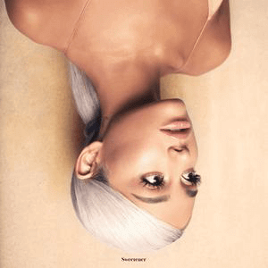

Ariana Grande-Butera is an American singer, songwriter, and actress. Her four-octave vocal range has received critical acclaim, and her personal life has been the subject of widespread media attention. She has received numerous accolades throughout her career, including two Grammy Awards, one Brit Award, one Bambi Award, two Billboard Music Awards, three American Music Awards, nine MTV Video Music Awards, and 27 Guinness World Records.
Her music and acting career began as early as 2008 when she starred on a Broadway musical 13
.
Between 2010 and 2013, she rose to fame playing Cat Valentine in the Nickelodeon TV series Victorious
.
In this period, her portrayal of Cat Valentine as an innocent, silly and sweet girl gave the audience an impression that she has similar character.
She later revealed on social media that dying her hair maroon once a week every week while shooting Victorious
did severe damage to her hair,
and her later iconic ponytail hairstyle was actually an attempt to hide hairloss from her Nickelodeon period.
Grande signed with Republic Records in 2011 after label executives viewed YouTube videos of her covering songs,
the most famous of which was Mariah Carey's Emotions
, consisting of dolphin-sounding vocals.
Ariana covering Emotions
, click image to view MV.
Her first three albums, Yours Truly, My Everything and Dangerous Woman, released in that order, all topped the US billboard 200. She explored the genres of pop and R&B in these early albums, which were well-received by music critics. Leading singles such as The Way, Problem and Dangerous Woman were proof of her musical talent, capability and potential.
Personal struggles influenced her trap-infused fourth and fifth studio albums, Sweetener and Thank U, Next, both of which were critical and commercial successes. Sweetener won the Grammy Award for Best Pop Vocal Album, and Thank U, Next broke the record for the largest streaming week for a pop album and was nominated for Album of the Year.

Interestingly, the cover of both albums features Ariana upside-down, probably to indicate complicated personal affairs. Singles in Thank U, next such as Thank U, next and 7 rings were particularly successful, not only holding the top spots on the Billboard Hot 100 simultaneously, but also making Ariana the first female artist at the top of the UK Singles Chart.

Ariana expresses grattitude to her ex-boyfriends for what she learned in relationships in her single Thank U, Next. Her firm belief in her own value instead of seeking a sense of belonging in relationships is aspiring to fans. On the other hand, in 7 Rings, Ariana puts stress on the power of friendship and the convenience of affluence.
The MV of Thank U, Next pays tribute to various classic movies, including Mean Girls while the tune of 7 Rings is derived from My Favourite Things in the musical the Sound of Music.
Often regarded as a pop icon and triple threat entertainer, Ariana is one of the world's best-selling music artists; she has sold more than 85 million records globally, and all of her studio albums have been certified platinum or higher. Among her Billboard chart records, she is the first artist and only woman to have five number-one debuts, to chart three number one-debuts in one calendar year, to debut the lead singles from each of her studio albums in the top ten, and to have their first five number one singles debut at top spot.